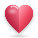

14162024324864
ITUNDAFACE
함께 만들어가는,
이툰다페이스.
ItundaFace는 감정과 행동, 일상의 순간을 말없이 표현할 수 있도록 만든 Itunda의 오리지널 이모지 폰트예요.
다운로드 ↓ITUNDAFACE 3D LIBRARYFLAT MASTER → TRUE VOLUME · COMMON VIEW · DRAG
ITUNDAFACE5 CANONICAL MASTERS · FLAT + 3D
표현을 위한
작은 언어.
TRUE 3D ICONSSAME SILHOUETTE · SHARED CAMERA · SHARED LIGHT
CANONICAL 2D MASTERHeart
svg/flat/heart.svgCOMPARE SILHOUETTE
ITUNDAFACE 3D
입체적인
시각 언어.
2D SVG에 그림자를 더한 것이 아니라, 실제 깊이와 볼륨을 가진 3D 마스터를 같은 카메라와 빛 아래에서 보여줘요.
3D ICON SYSTEM2D SOURCE OF TRUTH · TRUE VOLUME · ONE CAMERA · ONE LIGHT
입체적으로도
같은 언어.
DRAG TO ROTATE5 FLAT → 3D MASTERS
OPTICAL SIZE QA14 · 16 · 20 · 24 · 32 · 48 · 64 PX
같은 크기로
읽히도록.
숫자상 크기가 아니라 눈에 보이는 크기를 맞춥니다. 모든 마스터를 14px부터 64px까지 같은 기준으로 확인합니다.
14162024324864
14162024324864
14162024324864
14162024324864
LIGHT SURFACE
DARK SURFACE
DESIGN PRINCIPLES
단순하게.
일관되게.
01
가장 단순한 형태
기본 도형과 절제된 디테일로 작게 보아도 의미가 바로 전달되도록 만들어요.
02
모두 같은 시각적 크기
서로 다른 모양이어도 같은 공간에서 균형 있게 보이도록 광학 크기를 맞춰요.
03
하나의 컬러 언어
의미를 우선한 색과 Itunda의 인디고를 함께 사용해 밝은 화면과 어두운 화면 모두에서 일관되게 보여요.
04
같은 높이에서 바라보기
3D 글리프도 같은 실루엣과 시점, 빛의 방향을 공유해 하나의 가족처럼 보여요.
THE SYSTEM
하나의 캔버스,
하나의 언어.
모든 마스터는 80×80 좌표계에서 시작해요. 작은 UI부터 큰 표현까지 같은 실루엣과 규칙을 유지해요.
80×80canonical master
14pxrecognition gate
45°canonical tilt
PUAfont distribution
꾸준한 업데이트
더 많은 표현을
계속 만들어가요.
ItundaFace는 작은 마스터 하나부터 시작해요. 새로운 감정, 행동, 사람, 장소와 Itunda의 제품 언어를 같은 규칙으로 확장해요.
GitHub에서 보기 ↗♥ItundaFace✦

ITUNDAFACE
Itunda를 위한
새로운 시각 언어.
Inspired by disciplined emoji systems. Authored from scratch for Itunda.
GitHub에서 보기 ↗